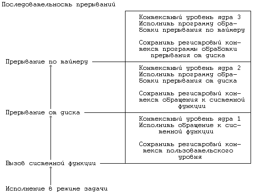
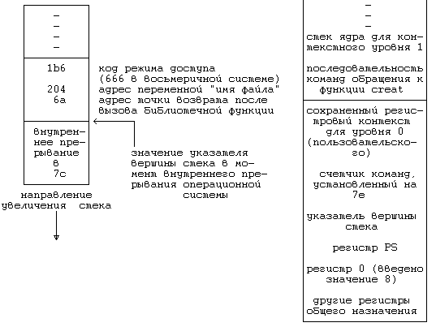

Как уже говорилось ранее, ядро сохраняет контекст процесса, помещая в стек новый контекстный уровень. В частности, это имеет место, когда система получает прерывание, когда процесс вызывает системную функцию или когда ядро выполняет переключение контекста. Каждый из этих случаев подробно рассматривается в этом разделе.
Система отвечает за обработку всех прерываний, поступили ли они от аппаратуры (например, от таймера или от периферийных устройств), от программ (в связи с выполнением инструкций, вызывающих возникновение "программных прерываний") или явились результатом особых ситуаций (таких как обращение к отсутствующей странице). Если центральный процессор ведет обработку на более низком уровне по сравнению с уровнем поступившего прерывания, то перед выполнением следующей инструкции его работа прерывается, а уровень прерывания процессора повышается, чтобы другие прерывания с тем же (или более низким) уровнем не могли иметь места до тех пор, пока ядро не обработает текущее прерывание, благодаря чему обеспечивается сохранение целостности структур данных ядра. В процессе обработки прерывания ядро выполняет следующую последовательность действий:
- Сохраняет текущий регистровый контекст выполняющегося процесса и создает в стеке (помещает в стек) новый контекстный уровень.
- Устанавливает "источник" прерывания, идентифицируя тип прерывания (например, прерывание по таймеру или от диска) и номер устройства, вызвавшего прерывание (например, если прерывание вызвано дисковым запоминающим устройством). При возникновении прерывания система получает от машины число, которое использует в качестве смещения в таблице векторов прерывания. Содержимое векторов прерывания в разных машинах различно, но, как правило, в них хранится адрес программы обработки прерывания, соответствующей источнику прерывания, и указывается путь поиска параметра для программы. В качестве примера рассмотрим таблицу векторов прерывания, приведенную на Рисунке 6.9. Если источником прерывания явился терминал, ядро получает от аппаратуры номер прерывания, равный 2, и вызывает программу обработки прерываний от терминала, именуемую ttyintr.
Номер прерывания Программа обработки
прерывания
0 clockintr
1 diskintr
2 ttyintr
3 devintr
4 softintr
5 otherintr
|
Рисунок 6.9. Пример векторов прерывания
- Вызов программы обработки прерывания. Стек ядра для нового контекстного уровня, если рассуждать логически, должен отличаться от стека ядра предыдущего контекстного уровня. В некоторых разработках стек ядра текущего процесса используется для хранения элементов, соответствующих программам обработки прерываний, в других разработках эти элементы хранятся в глобальном стеке прерываний, благодаря чему обеспечивается возврат из программы без переключения контекста.
- Программа завершает свою работу и возвращает управление ядру. Ядро исполняет набор машинных команд по сохранению регистрового контекста и стека ядра предыдущего контекстного уровня в том виде, который они имели в момент прерывания, после чего возобновляет выполнение восстановленного контекстного уровня. Программа обработки прерываний может повлиять на поведение процесса, поскольку она может внести изменения в глобальные структуры данных ядра и возобновить выполнение приостановленных процессов. Однако, обычно процесс продолжает выполняться так, как если бы прерывание никогда не происходило.
алгоритм inthand /* обработка прерываний */
входная информация: отсутствует
выходная информация: отсутствует
{
сохранить (поместить в стек) текущий контекстный
уровень;
установить источник прерывания;
найти вектор прерывания;
вызвать программу обработки прерывания;
восстановить (извлечь из стека) предыдущий кон-
текстный уровень;
}
|
Рисунок 6.10. Алгоритм обработки прерываний
На Рисунке 6.10 кратко изложено, каким образом ядро обрабатывает прерывания. С помощью использования в отдельных случаях последовательности машинных операций или микрокоманд на некоторых машинах достигается больший эффект по сравнению с тем, когда все операции выполняются программным обеспечением, однако имеются узкие места, связанные с числом сохраняемых контекстных уровней и скоростью выполнения машинных команд, реализующих сохранение контекста. По этой причине определенные операции, выполнения которых требует реализация системы UNIX, являются машинно-зависимыми.
На Рисунке 6.11 показан пример, в котором процесс запрашивает выполнение системной функции (см. следующий раздел) и получает прерывание от диска при ее выполнении. Запустив программу обработки прерывания от диска, система получает прерывание по таймеру и вызывает уже программу обработки прерывания по таймеру. Каждый раз, когда система получает прерывание (или вызывает системную функцию), она создает в стеке новый контекстный уровень и сохраняет регистровый контекст предыдущего уровня.
Такого рода взаимодействие с ядром было предметом рассмотрения в предыдущих главах, где шла речь об обычном вызове функций. Очевидно, что обычная последовательность команд обращения к функции не в состоянии переключить выполнения процесса с режима задачи на режим ядра. Компилятор с языка Си использует библиотеку функций, имена которых совпадают с именами системных функций, иначе ссылки на системные функции в пользовательских программах были бы ссылками на неопределенные имена. В библиотечных функциях обычно исполняется команда, переводящая выполнение процесса в режим ядра и побуждающая ядро к запуску исполняемого кода системной функции. В дальнейшем эта команда именуется "внутренним прерыванием операционной системы". Библиотечные процедуры исполняются в режиме задачи, а взаимодействие с операционной системой через вызов системной функции можно определить в нескольких словах как особый случай программы обработки прерывания. Библиотечные функции передают ядру уникальный номер системной функции одним из машинно-зависимых способов - либо как параметр внутреннего прерывания операционной системы, либо через отдельный регистр, либо через стек - а ядро таким образом определяет тип вызываемой функции.

Рисунок 6.11. Примеры прерываний
Обрабатывая внутреннее прерывание операционной системы, ядро по номеру системной функции ведет в таблице поиск адреса соответствующей процедуры ядра, то есть точки входа системной функции, и количества передаваемых функции параметров (Рисунок 6.12). Ядро вычисляет адрес (пользовательский) первого параметра функции, прибавляя (или вычитая, в зависимости от направления увеличения стека) смещение к указателю вершины стека задачи (аналогично для всех параметров функции). Наконец, ядро копирует параметры задачи в пространство процесса и вызывает соответствующую процедуру, которая выполняет системную функцию. После исполнения процедуры ядро выясняет, не было ли ошибки. Если ошибка была, ядро делает соответствующие установки в сохраненном регистровом контексте задачи, при этом в регистре PS обычно устанавливается бит переноса, а в нулевой регистр заносится номер ошибки. Если при выполнении системной функции не было ошибок, ядро очищает в регистре PS бит переноса и заносит возвращаемые функцией значения в регистры 0 и 1 в сохраненном регистровом контексте задачи. Когда ядро возвращается после обработки внутреннего прерывания операционной системы в режим задачи, оно попадает в следующую библиотечную инструкцию после прерывания. Библиотечная функция интерпретирует возвращенные ядром значения и передает их программе пользователя.
алгоритм syscall /* алгоритм запуска системной функции */
входная информация: номер системной функции
выходная информация: результат системной функции
{
найти запись в таблице системных функций, соответствую-
щую указанному номеру функции;
определить количество параметров, передаваемых функции;
скопировать параметры из адресного пространства задачи
в пространство процесса;
сохранить текущий контекст для аварийного завершения
(см. раздел 6.44);
запустить в ядре исполняемый код системной функции;
если (во время выполнения функции произошла ошибка)
{
установить номер ошибки в нулевом регистре сохра-
ненного регистрового контекста задачи;
включить бит переноса в регистре PS сохраненного
регистрового контекста задачи;
}
в противном случае
занести возвращаемые функцией значения в регистры 0
и 1 в сохраненном регистровом контексте задачи;
}
|
Рисунок 6.12. Алгоритм обращения к системным функциям
В качестве примера рассмотрим программу, которая создает файл с разрешением чтения и записи в него для всех пользователей (режим доступа 0666) и которая приведена в верхней части Рисунка 6.13. Далее на рисунке изображен отредактированный фрагмент сгенерированного кода программы после компиляции и дисассемблирования (создания по объектному коду эквивалентной программы на языке ассемблера) в системе Motorola 68000. На Рисунке 6.14 изображена конфигурация стека для системной функции создания. Компилятор генерирует программу помещения в стек задачи двух параметров, один из которых содержит установку прав доступа (0666), а другой - переменную "имя файла" (**). Затем из адреса 64 процесс вызывает библиотечную функцию creat (адрес 7a), аналогичную соответствующей системной функции. Адрес точки возврата из функции 6a, этот адрес помещается процессом в стек. Библиотечная функция creat засылает в регистр 0 константу 8 и исполняет команду прерывания (trap), которая переключает процесс из режима задачи в режим ядра и заставляет его обратиться к системной функции. Заметив, что процесс вызывает системную функцию, ядро выбирает из регистра 0 номер функции (8) и определяет таким образом, что вызвана функция creat. Просматривая внутреннюю таблицу, ядро обнаруживает, что системной функции creat необходимы два параметра; восстанавливая регистровый контекст предыдущего уровня, ядро копирует параметры из пользовательского пространства в пространство процесса. Процедуры ядра, которым понадобятся эти параметры, могут найти их в определенных местах адресного пространства процесса. По завершении исполнения кода функции creat управление возвращается программе обработки обращений к операционной системе, которая проверяет, установлено ли поле ошибки в пространстве процесса (то есть имела ли место во время выполнения функции ошибка); если да, программа устанавливает в регистре PS бит переноса, заносит в регистр 0 код ошибки и возвращает управление ядру. Если ошибок не было, в регистры 0 и 1 ядро заносит код завершения. Возвращая управление из программы обработки обращений к операционной системе в режим задачи, библиотечная функция проверяет состояние бита переноса в регистре PS (по адресу 7): если бит установлен, управление передается по адресу 13c, из нулевого регистра выбирается код ошибки и помещается в глобальную переменную errno по адресу 20, в регистр 0 заносится -1, и управление возвращается на следующую после адреса 64 (где производится вызов функции) команду. Код завершения функции имеет значение -1, что указывает на ошибку в выполнении системной функции. Если же бит переноса в регистре PS при переходе из режима ядра в режим задачи имеет нулевое значение, процесс с адреса 7 переходит по адресу 86 и возвращает управление вызвавшей программе (адрес 64); регистр 0 содержит возвращаемое функцией значение.
char name[] = "file";
main()
{
int fd;
fd = creat(name,0666);
}
|
Фрагменты ассемблерной программы, сгенерированной в
системе Motorola 68000
Адрес Команда
-
-
# текст главной программы
-
58: mov &Ox1b6,(%sp) # поместить код 0666 в стек
5e: mov &Ox204,-(%sp) # поместить указатель вершины
# стека и переменную "имя файла"
# в стек
64: jsr Ox7a # вызов библиотечной функции
# создания файла
-
-
# текст библиотечной функции создания файла
7a: movq &Ox8,%d0 # занести значение 8 в регистр 0
7c: trap &Ox0 # внутреннее прерывание операци-
# онной системы
7e: bcc &Ox6 <86> # если бит переноса очищен,
# перейти по адресу 86
80: jmp Ox13c # перейти по адресу 13c
86: rts # возврат из подпрограммы
-
-
# текст обработки ошибок функции
13c: mov %d0,&Ox20e # поместить содержимое регистра
# 0 в ячейку 20e (переменная
# errno)
142: movq &-Ox1,%d0 # занести в регистр 0 константу
# -1
144: mova %d0,%a0
146: rts # возврат из подпрограммы
|
Рисунок 6.13. Системная функция creat и сгенерированная программа ее выполнения в системе Motorola 68000

Рисунок 6.14. Конфигурация стека для системной функции creat
Несколько библиотечных функций могут отображаться на одну точку входа в список системных функций. Каждая точка входа определяет точные синтаксис и семантику обращения к системной функции, однако более удобный интерфейс обеспечивается с помощью библиотек. Существует, например, несколько конструкций системной функции exec, таких как execl и execle, выполняющих одни и те же действия с небольшими отличиями. Библиотечные функции, соответствующие этим конструкциям, при обработке параметров реализуют заявленные свойства, но в конечном итоге, отображаются на одну и ту же функцию ядра.
(**) Очередность, в которой компилятор вычисляет и помещает в стек параметры функции, зависит от реализации системы.
Если обратиться к диаграмме состояний процесса (Рисунок 6.1), можно увидеть, что ядро разрешает производить переключение контекста в четырех случаях: когда процесс приостанавливает свое выполнение, когда он завершается, когда он возвращается после вызова системной функции в режим задачи, но не является наиболее подходящим для запуска, или когда он возвращается в режим задачи после завершения ядром обработки прерывания, но так же не является наиболее подходящим для запуска. Как уже было показано в главе 2, ядро поддерживает целостность и согласованность своих внутренних структур данных, запрещая произвольно переключать контекст. Прежде чем переключать контекст, ядро должно удостовериться в согласованности своих структур данных: то есть в том, что сделаны все необходимые корректировки, все очереди выстроены надлежащим образом, установлены соответствующие блокировки, позволяющие избежать вмешательства со стороны других процессов, что нет излишних блокировок и т.д. Например, если ядро выделяет буфер, считывает блок из файла и приостанавливает выполнение до завершения передачи данных с диска, оно оставляет буфер заблокированным, чтобы другие процессы не смогли обратиться к буферу. Но если процесс исполняет системную функцию link, ядро снимает блокировку с первого индекса перед тем, как снять ее со второго индекса, и тем самым предотвращает возникновение тупиковых ситуаций (взаимной блокировки).
Ядро выполняет переключение контекста по завершении системной функции exit, поскольку в этом случае больше ничего не остается делать. Кроме того, переключение контекста допускается, когда процесс приостанавливает свою работу, поскольку до момента возобновления может пройти немало времени, в течение которого могли бы выполняться другие процессы. Переключение контекста допускается и тогда, когда процесс не имеет преимуществ перед другими процессами при исполнении, с тем, чтобы обеспечить более справедливое планирование процессов: если по выходе процесса из системной функции или из прерывания обнаруживается, что существует еще один процесс, который имеет более высокий приоритет и ждет выполнения, то было бы несправедливо оставлять его в ожидании.
Процедура переключения контекста похожа на процедуры обработки прерываний и обращения к системным функциям, если не считать того, что ядро вместо предыдущего контекстного уровня текущего процесса восстанавливает контекстный уровень другого процесса. Причины, вызвавшие переключение контекста, при этом не имеют значения. На механизм переключения контекста не влияет и метод выбора следующего процесса для исполнения.
1. Принять решение относительно необходимости переклю-
чения контекста и его допустимости в данный момент.
2. Сохранить контекст "прежнего" процесса.
3. Выбрать процесс, наиболее подходящий для исполнения,
используя алгоритм диспетчеризации процессов, приве-
денный в главе 8.
4. Восстановить его контекст.
|
Рисунок 6.15. Последовательность шагов, выполняемых при переключении контекста
Текст программы, реализующей переключение контекста в системе UNIX, из всех программ операционной системы самый трудный для понимания, ибо при рассмотрении обращений к функциям создается впечатление, что они в одних случаях не возвращают управление, а в других - возникают непонятно откуда. Причиной этого является то, что ядро во многих системных реализациях сохраняет контекст процесса в одном месте программы, но продолжает работу, выполняя переключение контекста и алгоритмы диспетчеризации в контексте "прежнего" процесса. Когда позднее ядро восстанавливает контекст процесса, оно возобновляет его выполнение в соответствии с ранее сохраненным контекстом. Чтобы различать между собой те случаи, когда ядро восстанавливает контекст нового процесса, и когда оно продолжает исполнять ранее сохраненный контекст, можно варьировать значения, возвращаемые критическими функциями, или устанавливать искусственным образом текущее значение счетчика команд.
На Рисунке 6.16 приведена схема переключения контекста. Функция save_context сохраняет информацию о контексте исполняемого процесса и возвращает значение 1. Кроме всего прочего, ядро сохраняет текущее значение счетчика команд (в функции save_context) и значение 0 в нулевом регистре при выходе из функции. Ядро продолжает исполнять контекст "прежнего" процесса (A), выбирая для выполнения следующий процесс (B) и вызывая функцию resume_context для восстановления его контекста. После восстановления контекста система выполняет процесс B; прежний процесс (A) больше не исполняется, но он оставил после себя сохраненный контекст. Позже, когда будет выполняться переключение контекста, ядро снова изберет процесс A (если только, разумеется, он не был завершен). В результате восстановления контекста A ядро присвоит счетчику команд то значение, которое было сохранено процессом A ранее в функции save_context, и возвратит в регистре 0 значение 0. Ядро возобновляет выполнение процесса A из функции save_context, пусть даже при выполнении программы переключения контекста оно не добралось еще до функции resume_context. В конечном итоге, процесс A возвращается из функции save_context со значением 0 (в нулевом регистре) и возобновляет выполнение после строки комментария "возобновление выполнение процесса начинается отсюда".
if (save_context()) /* сохранение контекста выполняющегося
процесса */
{
/* выбор следующего процесса для выполнения */
-
-
-
resume_context(new_process);
/* сюда программа не попадает ! */
}
/* возобновление выполнение процесса начинается отсюда */
|
Рисунок 6.16. Псевдопрограмма переключения контекста
Существуют ситуации, когда ядро вынуждено аварийно прерывать текущий порядок выполнения и немедленно переходить к исполнению ранее сохраненного контекста. В последующих разделах, где пойдет речь о приостановлении выполнения и о сигналах, будут описаны обстоятельства, при которых процессу приходится внезапно изменять свой контекст; в данном же разделе рассматривается механизм исполнения предыдущего контекста. Алгоритм сохранения контекста называется setjmp, а алгоритм восстановления контекста - longjmp (***). Механизм работы алгоритма setjmp похож на механизм функции save_context, рассмотренный в предыдущем разделе, если не считать того, что функция save_context помещает новый контекстный уровень в стек, в то время как setjmp сохраняет контекст в пространстве процесса и после выхода из него выполнение продолжается в прежнем контекстном уровне. Когда ядру понадобится восстановить контекст, сохраненный в результате работы алгоритма setjmp, оно исполнит алгоритм longjmp, который восстанавливает контекст из пространства процесса и имеет, как и setjmp, код завершения, равный 1.
До сих пор речь шла о том, что процесс выполняется в режиме ядра или в режиме задачи без каких-либо перекрытий (пересечений) между режимами. Однако, при выполнении большинства системных функций, рассмотренных в последней главе, между пространством ядра и пространством задачи осуществляется пересылка данных, например, когда идет копирование параметров вызываемой функции из пространства задачи в пространство ядра или когда производится передача данных из буферов ввода-вывода в процессе выполнения функции read. На многих машинах ядро системы может непосредственно ссылаться на адреса, принадлежащие адресному пространству задачи. Ядро должно убедиться в том, что адрес, по которому производится запись или считывание, доступен, как будто бы работа ведется в режиме задачи; в противном случае произошло бы нарушение стандартных методов защиты и ядро, пусть неумышленно, стало бы обращаться к адресам, которые находятся за пределами адресного пространства задачи (и, возможно, принадлежат структурам данных ядра). Поэтому передача данных между пространством ядра и пространством задачи является "дорогим предприятием", требующим для своей реализации нескольких команд.
fubyte: # пересылка байта из
# пространства задачи
prober $3,$1,*4(ap) # байт доступен?
beql eret # нет
movzbl *4(ap),r0
ret
eret:
mnegl $1,r0 # возврат ошибки (-1)
ret
|
Рисунок 6.17. Пересылка данных из пространства задачи в пространство ядра в системе VAX
На Рисунке 6.17 показан пример реализованной в системе VAX программы пересылки символа из адресного пространства задачи в адресное пространство ядра. Команда prober проверяет, может ли байт по адресу, равному (регистр указателя аргумента + 4), быть считан в режиме задачи (режиме 3), и если нет, ядро передает управление по адресу eret, сохраняет в нулевом регистре -1 и выходит из программы; при этом пересылки символа не происходит. В противном случае ядро пересылает один байт, находящийся по указанному адресу, в регистр 0 и возвращает его в вызывающую программу. Пересылка 1 символа потребовала пяти команд (включая вызов функции с именем fubyte).
(***) Эти алгоритмы не следует путать с имеющими те же названия библиотечными функциями, которые могут вызываться непосредственно из пользовательских программ (см. [SVID 85]). Однако действие этих функций похоже.
Предыдущая глава || Оглавление || Следующая глава
{kind=link}